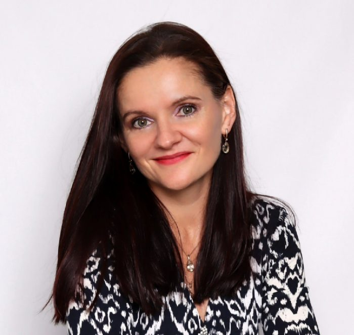
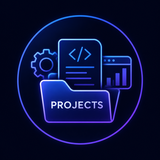
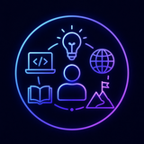

About Me
Hi, I'm Olga Shtykova — a Business Analyst who enjoys bringing clarity to complexity. I work at the intersection of business and technology, helping stakeholders and delivery teams turn ideas into well-defined, practical solutions that create real value.
My path into business analysis wasn't a traditional one. I began my career as a .NET Software Engineer before transitioning into business analysis, giving me a strong technical foundation and the ability to communicate comfortably with both business stakeholders and development teams.
My background combines psychology, software engineering, and business analysis. Psychology shapes how I approach communication and collaboration, while my technical education helps me understand complex systems and contribute effectively throughout the software delivery lifecycle.
I'm also passionate about using AI to work more effectively. I regularly apply modern AI tools to streamline documentation, analyse business processes, map user journeys, and automate repetitive tasks — freeing up more time to focus on solving problems and delivering value.
I'm naturally curious and enjoy continuously learning new technologies, methodologies, and ways of improving how people and teams work together.
Fluent in English · Native Russian
My Journey
From building software to shaping solutions — a look at the projects that guided my transition from software engineering to business analysis.
Ticketmaster UK — Business Analyst
Helped bridge business needs and technical implementation across the full delivery lifecycle for one of the world's leading ticketing platforms. Led requirements coordination for an initiative enabling secure third-party API access, working closely with stakeholders, architects, developers, and QA to keep everyone aligned on complex functionality — bringing structure to ambiguity and documentation that let teams move forward with confidence.
Ticketmaster UK — Software Engineer
Spent over three years developing and maintaining services within Ticketmaster's event-driven microservices platform using ASP.NET/ASP.NET Core, delivering new functionality and resolving production issues for a system used by millions of customers. Maintained CI/CD pipelines, worked with SQL Server, supported AWS deployments, implemented automated testing, and monitored production — collaboration with business analysts and product managers that ultimately inspired my move into business analysis.
Health and Wellness Portal — Business Analyst
Joined an internal EPAM project as a Business Analyst alongside my engineering role, supporting an employee health and wellness platform. Gathered and refined requirements, prepared user stories and use cases, facilitated backlog refinement sessions, and worked closely with developers and QA — building my confidence in leading discussions and translating ideas into clear, actionable requirements.
EPAM Training Portal (training.by) — Student Software Engineer
My first opportunity to contribute to a real enterprise application: developed new functionality, fixed defects, and wrote automated tests using the .NET ecosystem while learning modern development practices in a collaborative team — a technical foundation that continues to support my work as a Business Analyst.

Interesting Facts
Lived in the USA for 10 years and in Denmark for 3 months; have also traveled to China, India, and several countries across Europe.
An artist at heart — I draw and paint in watercolor and oil. View my art
Music has been part of my life since childhood. I studied choir, piano, solfeggio, and music history.
I practice yoga, meditation, and mindfulness as a way to maintain balance, focus, and well-being.
Let's connect on LinkedIn and explore opportunities to collaborate.
"Behind every requirement is a person trying to solve a real problem. That's where I like to start."— Olga Shtykova